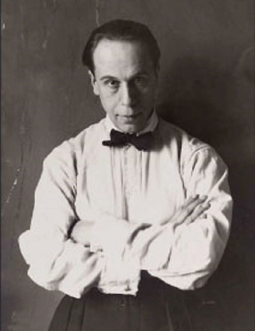

Gerriet Rietveld
Diseñador y arquitecto, autor de la Silla Roja y Azul y la Casa Schröder. Su trabajo trasladó los principios de De Stijl al mobiliario y la arquitectura con precisión y claridad formal.

Bart Van Der Leck
Pintor neerlandés. Evolucionó hacia la abstracción con rectángulos planos de color, contribuyendo a definir la paleta y el lenguaje visual de De Stijl.

Theo Van Doesburg
Co-fundador de De Stijl y principal difusor del movimiento. Experimentó con la diagonal (elementarismo) para dinamizar la composición y ampliar el alcance del estilo.

Piet Mondrian
Figura clave del neoplasticismo. Sus composiciones de líneas negras y planos primarios sintetizan un orden universal, influencia duradera en el arte y el diseño.